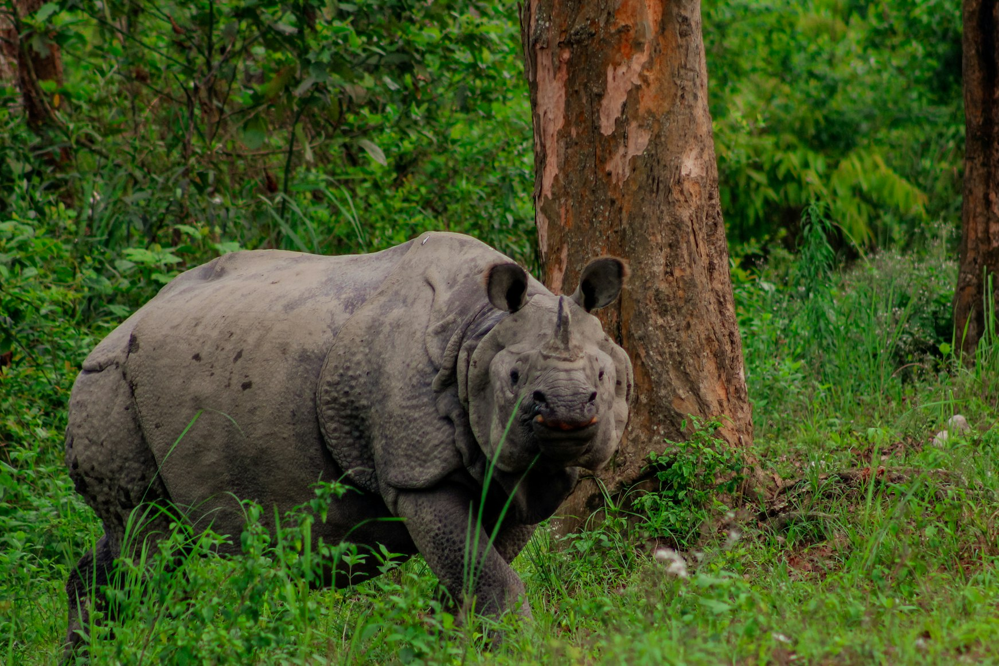
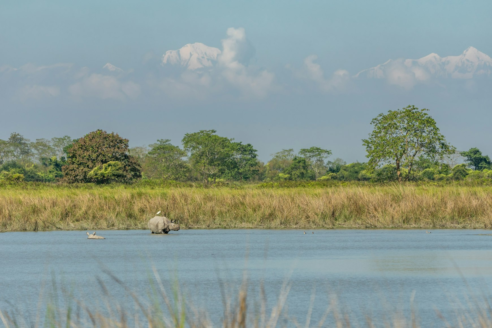
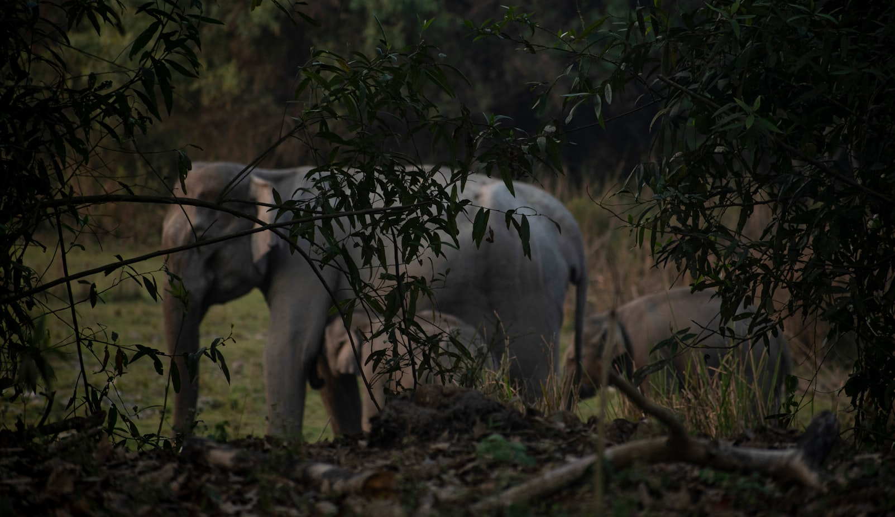
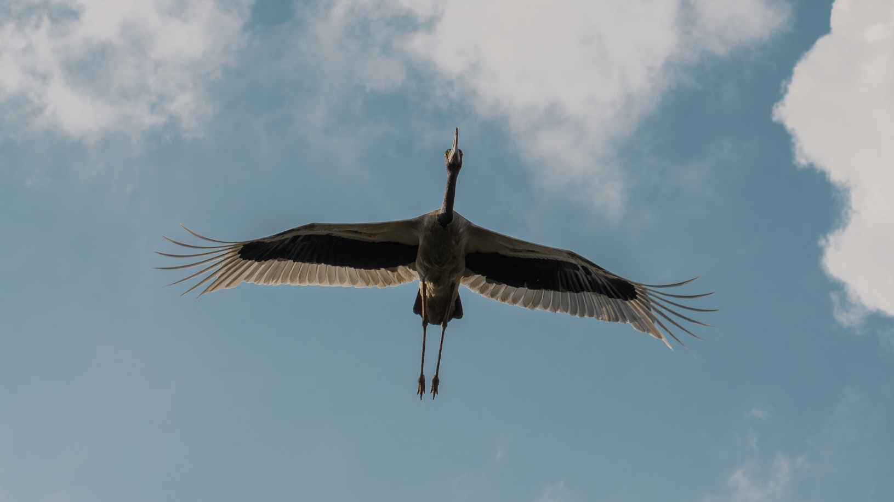
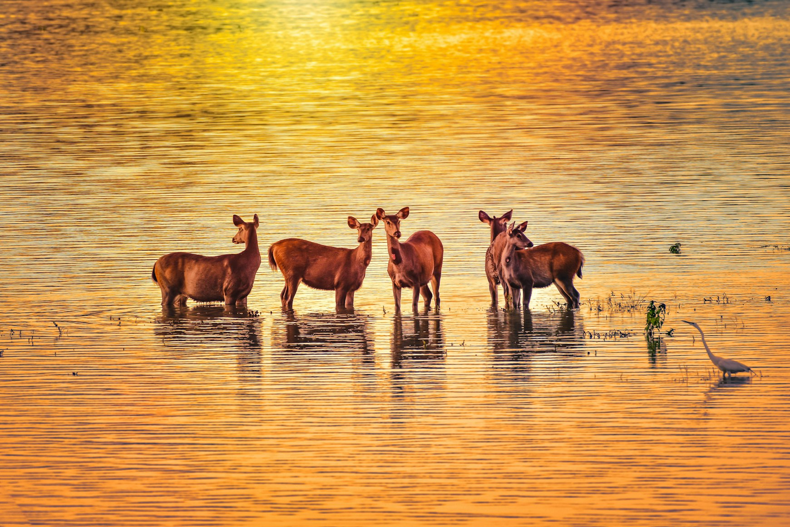
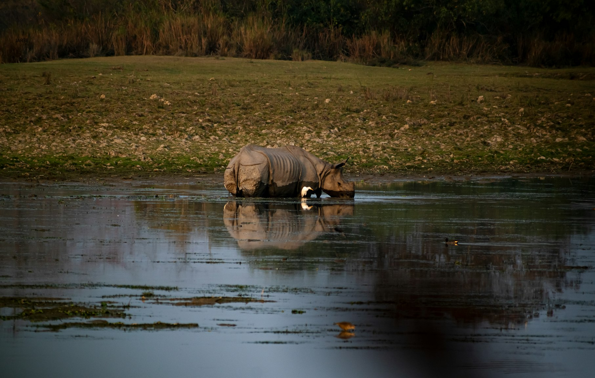

Kaziranga National Park, in the northeastern Indian state of Assam, is one of those rare places where the landscape leaves an impression long before the wildlife does.
The road passes through tea plantations, small villages, bamboo fences, and endless stretches of greenery that feel very different from the India many travelers first imagine.
There are no desert forts, royal palaces, or Himalayan monasteries here. This is the India of rivers, monsoons, and floodplain grasslands, where water shapes the land itself and tall elephant grass can hide a rhinoceros until it is almost beside you.
The park lies on the floodplains connected to the Brahmaputra, one of Asia’s great rivers. That is precisely what makes Kaziranga so remarkable.
Wetlands, marshes, grasslands, patches of forest, and countless water bodies create ideal conditions for an extraordinary concentration of wildlife.
Life is constantly visible here. Mist drifts across the grass at dawn. White egrets rise from shallow water. Wild buffalo stand motionless in the marshes. Deer pause for a moment, listening to sounds from the forest edge.
Then, emerging from the tall grass, comes the greater one-horned rhinoceros — massive, ancient-looking, and perfectly at home in this landscape.
The Animal Everyone Comes to See

Rhinos are the reason Kaziranga became famous around the world.
The park holds the largest population of greater one-horned rhinoceroses anywhere on Earth. According to the 2022 census, Kaziranga was home to 2,613 individuals.
For visitors, this means one simple thing: seeing a rhino here is not a rare stroke of luck but a realistic part of the safari experience.
They can often be seen grazing in open meadows, crossing tracks, resting near water, or standing half-hidden among reeds.
The first encounter is often quieter than people expect. A rhino does not try to impress anyone. It simply continues grazing, occasionally lifting its head or turning an ear.
Its skin resembles natural armor, folded into thick plates. Yet everything around it feels surprisingly gentle: grass moving in the wind, morning mist lingering over the wetlands, birds feeding nearby.
It is this contrast that makes Kaziranga so memorable. The animal looks as though it belongs to another age, while the scene around it feels calm, soft, and entirely alive.
In 1985, Kaziranga was designated a UNESCO World Heritage Site. The recognition was not based solely on its rhino population but on the ecological importance of the entire floodplain ecosystem.
Alongside rhinos, the park supports Asian elephants, wild water buffalo, swamp deer, wild boar, tigers, leopards, sloth bears, and an exceptional diversity of birdlife.
A Landscape Shaped by the Brahmaputra

The best way to understand Kaziranga is not as a place to search for individual animals but as a living system.
The Brahmaputra regularly overflows its banks. Although these floods can appear destructive, they are essential to the park’s survival.
The water deposits fresh sediment, renews the grasslands, and creates the conditions that sustain countless wetlands.
As a result, the landscape is constantly changing and never feels static.
The Safari Experience

Morning safaris begin before the sun has had a chance to warm the air.
Coolness lingers above the grass, and sounds seem unusually clear.
Jeeps move slowly along dirt tracks bordered by elephant grass that can rise several meters high.
Then the vegetation suddenly opens, revealing wetlands, grazing grounds, and open water.
Guides carefully scan the landscape. They know where rhinos are likely to be feeding, where elephants may be moving through the grass, and which areas attract large numbers of birds.
Watching the landscape gradually reveal itself is one of the pleasures of a Kaziranga safari.
The Best Safari Zones in Kaziranga
For most travelers, the introduction to the park begins around Kohora in the Central Range.
This area offers an excellent overview of Kaziranga’s mix of grasslands, wetlands, and forests.
Many visitors leave with their first unforgettable images from this part of the park: rhinos standing in mist, buffalo near the water, and flocks of birds rising from marshes.
The Western Range at Bagori is widely regarded as one of the best areas for rhino sightings.
Broad grasslands stretch toward the horizon, creating excellent viewing opportunities.
Early in the morning, rhinos can often be seen grazing in soft light while swamp deer move through the meadows and buffalo stand in the wetlands like dark statues.
Agaratoli and the Birdlife of Kaziranga

The Eastern Range at Agaratoli is particularly popular among birdwatchers.
The area contains more rivers, wetlands, and water bodies than other parts of the park, attracting a remarkable variety of species.
Even visitors with little interest in identifying birds soon notice how much life these habitats contain.
Kingfishers flash across the water. Storks wade through shallow pools. Raptors circle high above the grasslands.
Birds add a special dimension to Kaziranga.
During winter, migratory species join the park’s resident birdlife, turning the wetlands into constantly changing scenes of movement and sound.
Egrets, storks, eagles, ducks, and dozens of other species make the landscape feel endlessly alive.
Even travelers with no prior interest in birdwatching often find themselves paying attention to details they would normally overlook.
Beyond the Rhinos

Burapahar has a more forested character than the other safari zones.
This part of the park appeals to visitors who want to experience a different side of Kaziranga.
There are fewer open vistas and more opportunities to appreciate the quieter atmosphere of the forest.
Although rhinos are the stars of the park, wild water buffalo are equally impressive.
These powerful animals carry enormous curved horns and look perfectly suited to the wetlands they inhabit.
Swamp deer bring grace and movement to the grasslands, while elephants often appear in family groups, moving slowly through the tall vegetation with calves protected among the adults.
Tigers in the Tall Grass
Kaziranga is also home to tigers and plays an important role in their conservation.
However, this is not a destination where visitors should expect tiger sightings to define the experience.
The tall grass and dense vegetation allow these predators to remain remarkably elusive.
Their presence matters for another reason.
Tigers are evidence of a healthy ecosystem.
A landscape capable of supporting large herbivores, extensive wetlands, rich grasslands, and apex predators is functioning on a scale that few places can still achieve.
Even when unseen, tigers remain an important part of Kaziranga’s identity.
When to Visit Kaziranga
The best time to visit is generally between November and April.
During the monsoon season, the park closes because of heavy rainfall and flooding.
December and January bring cool mornings and atmospheric mist, while February and March are often considered the most comfortable months thanks to pleasant temperatures and excellent visibility.
To appreciate Kaziranga properly, it is worth staying at least two nights.
Three nights allow visitors to experience the rhythm of the landscape more fully.
The park reveals itself gradually.
The goal is not to fit in as many safaris as possible but to watch how the landscape changes from dawn to afternoon and into evening.
Most travelers arrive from Guwahati, Assam’s largest city and the region’s primary gateway.
The drive takes several hours, but it feels like part of the journey rather than a transfer.
Tea plantations become increasingly common. Villages appear along the roadside. The landscape grows greener and wetter as the park approaches.
Where to Stay
Accommodation around Kaziranga ranges from simple lodges to comfortable nature resorts.
The most important factors are not luxury or elaborate facilities but easy access to safari zones, knowledgeable guides, a peaceful atmosphere, and the opportunity to enjoy the landscape between excursions.
Why Kaziranga Stays With People

Kaziranga is endlessly photogenic, yet many travelers find their strongest memories come when the camera is put away.
There is something deeply satisfying about simply watching a rhino slowly chewing grass, observing birds moving through the wetlands, or seeing morning mist gradually dissolve in the sunlight.
Kaziranga also represents one of modern India’s most important conservation success stories.
The recovery of the greater one-horned rhinoceros is the result of decades of protection, anti-poaching efforts, habitat management, and the daily work of park staff.
This does not mean every challenge has disappeared. Floods, habitat pressures, and poaching remain real concerns.
Yet visitors can see the results of those efforts with their own eyes.
For travelers who have experienced safaris in Africa, Kaziranga feels entirely different.
There are no vast open savannas stretching to the horizon. The landscape is greener, wetter, and more enclosed.
Animals emerge from tall grass and disappear into it again. Encounters often feel closer and more surprising.
Many people remember Kaziranga not for dramatic events but for a collection of small sensory impressions.
The color of dry grass at sunrise. The smell of wet earth. The silhouette of a rhino fading into the mist. A cup of strong Assam tea after an early morning safari.
That is why Kaziranga remains one of India’s most remarkable natural destinations.
Its appeal comes not from spectacle but from authenticity.
Water still shapes the landscape. Large animals still have room to live.
Visitors can still witness an ecosystem functioning much as it has for generations.
Kaziranga does not require exaggeration.
A rhinoceros grazing quietly in the morning light is more than enough.